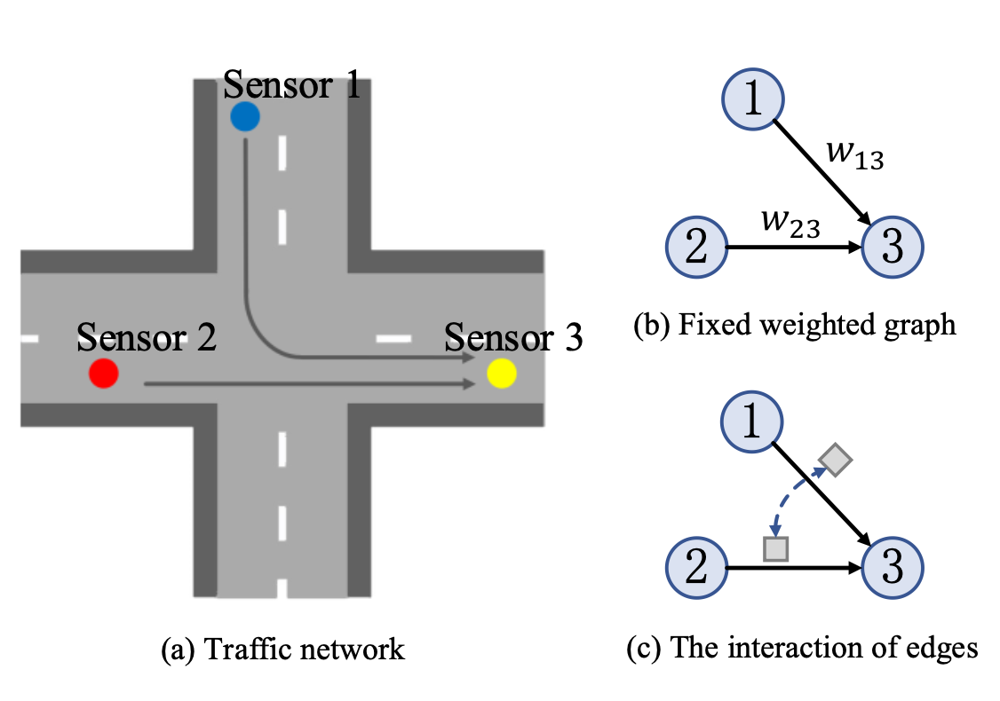
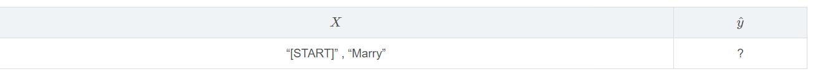
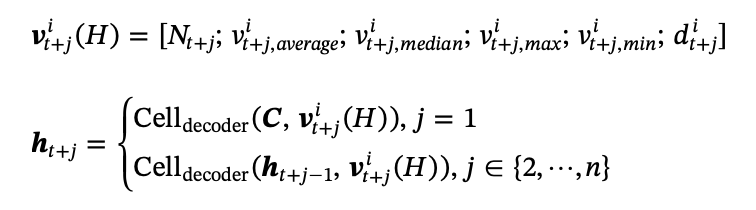
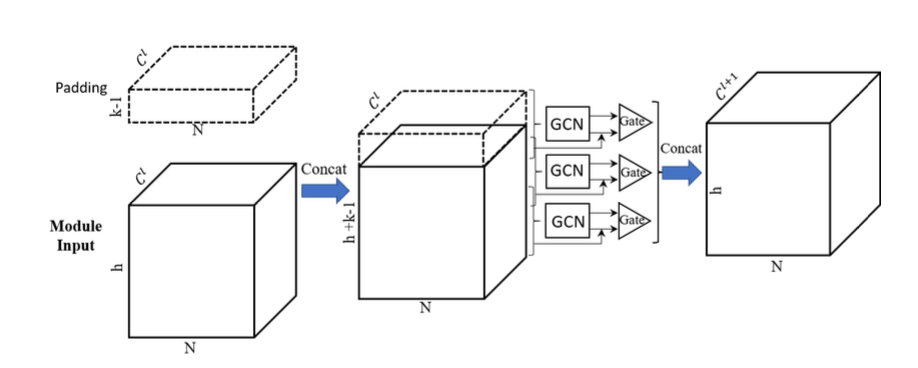
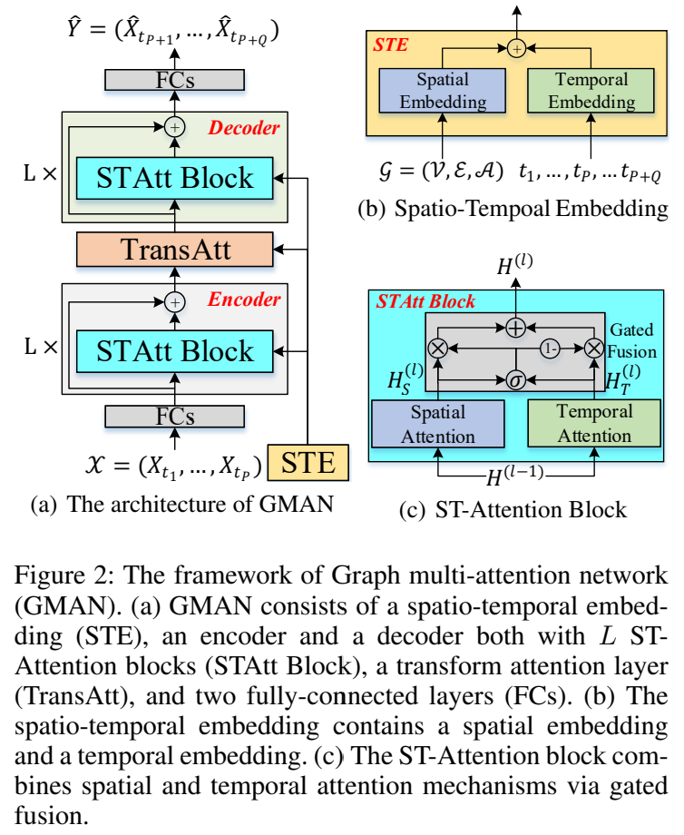

交通流Seq2Seq12篇
论文汇总表
| 论文名 | 创新点 | 属于交通哪一类问题 | 节点V 及含义 | 边E及含义 | 邻接矩阵A及每一个a的含义 | 特征矩阵X及含义 | GNNS | RNNS | 其他方法 |
|---|---|---|---|---|---|---|---|---|---|
| Multi-Range Attentive Bicomponent Graph Convolutional Network for Traffic Forecasting | 1.道路的权重是变化的，也就是道路网的边之间有相互的影响 2.使用GCN的时候只考虑了一个范围，比如这个范围是k跳邻居节点。 | 交通流量预测模型 | 传感器 | 传感器i到j构成一条边 | 一个node-wise两个edge-wides | 每个传感器的特征，与数据集有关 | Bicomponent Graph Convolution | GRU | Multi-Range Attention |
| A deep learning approach considering spatio-temporal dependencies | 为了捕获多步交通状况预测中复杂的非平稳时间动态和空间相关性 | 交通流量预测模型 | 节点集N表示路口传感器或高速公路上选定的分界点 | 链路集L表示路段 | 稀疏矩阵A为链路集的邻接矩阵，虚拟变量A (i, j)表示链路i与链路j是否连通 | 数据集自带特征V 以及Time-of-day and weekday-or-weekend，Historical statistic information | GCN | GRU | 注意力机制 |
| STG2Seq: Spatial-Temporal Graph to Sequence Model for Multi-step Passenger Demand Forecasting | 预测多个时刻的乘客需求由于时空依赖的非线性和动态性 | 交通需求预测模型 | N个小区域 | 根据区域间旅客需求模式的相似性定义图的边 | 相似度 | 所有区域在时间 的旅客需求以及包含了几点、星期几以及节假日的信息。 | Gated Graph Convolutional Module | Long-term and Short-term Encoders | 注意力机制 |
| Spatio-Temporal Graph Convolutional and Recurrent Networks for Citywide Passenger Demand Prediction | 预测多个时刻的乘客需求由于时空依赖的非线性和动态性 | 交通需求预测模型 | N个小区域 | 根据区域间旅客需求模式的相似性定义图的边 | 相似度 | 所有区域在时间 的旅客需求以及包含了几点、星期几以及节假日的信息。 | GCN | LSTM | 无 |
| 论文名 | 创新点 | 属于交通哪一类问题 | 节点V 及含义 | 边E及含义 | 邻接矩阵A及每一个a的含义 | 特征矩阵X及含义 | GNNS | RNNS | 其他方法 |
|---|---|---|---|---|---|---|---|---|---|
| Dual Graph for Traffic Forecasting | 同时考虑了道路节点和边的信息 | 流量预测 | 路口 | 道路 | 有边就为1，没有就为0 | 流量 | 1 | ||
| GMAN: A Graph Multi-Attention Network for Traffic Prediction | 时空注意力，transform注意力里用时空特征缓解了误差传播 | 流量预测 | 传感器 | 连通性 | 节点的proximity | 流量加时空特征 | 1 | MAE，RMSE，MAPE | |
| GCGAN: Generative Adversarial Nets with Graph CNN for Network-Scale Traffic Prediction | GAN | 流量预测 | 路段 | 连通性 | 节点的proximity | 流量 | 1 | 注意力公式用的是Gumbel-Softmax | |
| Learning Dynamic Graph Embedding for Traffic Flow Forecasting:A Graph Self-Attentive Method | 自注意力 | 流量预测 | 传感器 | 连通性 | 节点的proximity | 流量 | 1 | MAE，RMSE，MAPE |
multi-Range attentive GCN for 交通预测
解决的问题
作者认为即使使用GCN仍然有一些问题
道路的权重是变化的，也就是道路网的边之间有相互的影响，比如下图（c）中的两个边之间有影响。
使用GCN的时候只考虑了一个范围，比如这个范围是k跳邻居节点。

作者认为考虑多个范围是有必要的，也就是局部和全局两个角度，从一般的角度比如（1,2,3,…..,k）跳邻居，然后使用attention的方式考虑节点各跳的权重比，最后使用了RNN来建模时序关系，主要就是使用前面GCN处理后的特征作为RNN的输入。使用了两个数量集，METR-LA and PEMS-BAY。
整体架构图

然后我们先看下设计的整体架构图，这里没有包含时域的RNN模块。主要包含了输入的两个部分，一个是node-wise的，一个是edge-wise的网络，两个网络进行卷积，同时还设计了一个multi-range的attention (k-hops)，然后使用attention的方式考虑v各个hop之间的权重比，最后经过时序处理(RNN)之后输出。
Bicomponent Graph Convolution
考虑我们前面说的第一个问题，就是路网的边之间的影响，这里作者总结了两中影响关系，如下图所示：

流连接关系
$\begin{array}{c}
\boldsymbol{A}_{e,(i \rightarrow j),(j \rightarrow k)}=\boldsymbol{A}_{e,(j \rightarrow k),(i \rightarrow j)}=
\exp \left(-\frac{\left(\mathrm{deg}^{-}(j)+\mathrm{deg}^{+}(j)-2\right)^{2}}{\sigma^{2}}\right)
\end{array}$
竞争关系
$\begin{array}{l}
\boldsymbol{A}_{e,(i \rightarrow k),(j \rightarrow k)}=\boldsymbol{A}_{e,(j \rightarrow k),(i \rightarrow k)}=
\exp \left(-\frac{\left(\mathrm{deg}^{+}(i)+\operatorname{deg}^{+}(j)-2\right)^{2}}{\sigma^{2}}\right)
\end{array}$
在一个交通网络中，一个道路链路可能会受到其上下游道路链路的影响。如图a所示,(𝑖→𝑗)是 (𝑗→𝑘)的上游,因此它们是相关的。直观地说,如果联合节点𝑗有大量的邻居， (𝑖→𝑗)和(𝑗→𝑘)之间的关系就会较弱,容易受到其他邻居影响。我们计算流连接的边𝑨使用高斯核函数。竞争关系同理：共享同一源节点的道路链路可能会争夺交通资源，形成竞争关系。如图3 (b),两条边,(𝑖→𝑘)和(𝑗→𝑘),共享目标节点𝑘相关是由于竞争关系。与流连接类似，竞争关系的强度与源节点的度有关。如，如果一条边的源节点有多个输出边，则该边对于流量资源的竞争是非常强的。当然针对这种不同的图有作者自定义的卷积操作。
这里的A就是我们卷积边网络时候的连接矩阵，根据不同的关系我们重新构造连接矩阵，然后我们构造一个K跳的的graph conv。
$\begin{array}{c}
\boldsymbol{X}^{(l+1)}=\boldsymbol{\theta}_{n \star G}^{(l)}\left[\boldsymbol{X}^{(l)}, \boldsymbol{M Z}^{(l)}\right] \text { for } l=1, \cdots, k-1, \\
\boldsymbol{Z}^{(l+1)}=\boldsymbol{\theta}_{e \star G}^{(l)}\boldsymbol{Z}^{(l)} \quad \text { for } l=0, \cdots, k-1 \\
\boldsymbol{X}^{(1)}=\boldsymbol{\theta}_{n \star G}^{(0)} \boldsymbol{X}^{(0)} \\
\boldsymbol{Z}^{(0)}=\boldsymbol{M}^{\mathrm{T}} \boldsymbol{X}^{(0)} \boldsymbol{W}_{\mathrm{b}}
\end{array}$
⋆ 这是图卷积的标志， ,( → )= ,( → )=1 and 0 otherwise表示连接关系。
X表示监测的交通流量，所以 ={ (1), (2 ),⋯, ( k)},共考虑了k跳
M矩阵是一个线性变换 把节点信息编码成边的信息Z0，Z0经过一层边卷积同时节点进过一层节点卷积，最后利用M矩阵变换回来，把边信息与节点信息融合再做一次节点卷积。这就是整个卷积的过程。
Attention使用的目的主要是为了应对不同range之间如何融合的问题。multi-range attention mechanism转化为公式就是：
$\begin{array}{c}
e_{i}^{(l)}=\left(W_{\mathrm{a}} X_{i}^{(l)}\right)^{\mathrm{T}} \boldsymbol{u} \\
a_{i}^{(l)}=\operatorname{SoftMax}_{l}\left(e_{i}^{(l)}\right)=\frac{\exp \left(e_{i}^{(l)}\right)}{\sum_{l=1}^{k} \exp \left(e_{i}^{(l)}\right)}
\\
\boldsymbol{h}_{i}=\sum_{l=1}^{k} a_{i}^{(l)} \boldsymbol{X}_{i}^{(l)}
\end{array}$
最后这个就是常规操作了，我们上面已经考虑了空间的依赖关系，主要依靠图卷积进行学习，下面考虑的就是时间上的卷积。我们将空间卷积的结果直接作为RNN的输入就ok了
$\begin{aligned}
\boldsymbol{z}^{(t)} &=\sigma\left(g\left(\left[\boldsymbol{X}^{(t)}, \boldsymbol{H}^{(t-1)}\right] ; \boldsymbol{\Theta}_{z}\right)\right) \\
\boldsymbol{r}^{(t)} &=\sigma\left(g\left(\left[\boldsymbol{X}^{(t)}, \boldsymbol{H}^{(t-1)}\right] ; \boldsymbol{\theta}_{r}\right)\right) \\
\boldsymbol{C}^{(t)}=& \tanh \left(g\left(\left[\boldsymbol{X}^{(t)},\left(\boldsymbol{r}^{(t)} \odot \boldsymbol{H}^{(t-1)}\right)\right] ; \boldsymbol{\Theta}_{c}\right)\right) \\
\boldsymbol{H}^{(t)} &=\boldsymbol{z}^{(t)} \odot \boldsymbol{H}^{(t-1)}+\left(1-\mathbf{z}^{(t)}\right) \odot \boldsymbol{C}^{(t)}
\end{aligned}$
这个是我们预测的架构，一般我们需要的就是X5.

Multistep speed prediction on traffic networks: A deep learning approach considering spatio-temporal dependencies
相关工作及解决的问题
- 提出了一种新的深度学习框架AGC-Seq2Seq，该框架通过Seq2Seq模型和图形卷积层协同提取时空域的特征。克服多步预测的挑战。
- 为了捕捉城市交通模式的时间异质性，将注意机制进一步纳入模型。我们设计了一种新的针对多步交通预测的Seq2Seq框架的训练方法，以替代现有的训练方法(如 teacher forcing 和 scheduled sampling)。它在一个端到端深度学习结构中协调多维特征(例如历史统计信息和时间)和时空速度变量，使测试周期的输入与训练周期一致。
- 通过a -map提供的两个真实数据集进行验证，提出的模型在不同的预测区间内的各种主要误差度量方面比其他先进的基准有显著的改进。
数据结构
邻接矩阵
根据行车方向将路网建模为有向图，其中节点集 $N$ 表示路口(检测器或高速公路上选定的分界点)，链路集 $L$ 表示路段，如图1所示。A为链路集的邻接矩阵，虚拟变量A (i, j)表示链路i与链路j是否连通，即
$\boldsymbol{A}(i, j)=\left\{\begin{array}{ll}
1, l_{i} \text { and } l_{j} \text { are connected along driving direction } \\
0, \text { otherwise }
\end{array}\right.$
特征向量
- 交通速度
- 一天中的时间和一周中的时间
- 历史标准信息比如平均值，中值，最大最小值。
什么是Teacher Forcing
所谓Teacher Forcing，就是在学习时跟着老师(ground truth)走!
它是一种网络训练方法，对于开发用于机器翻译，文本摘要，图像字幕的深度学习语言模型以及许多其他应用程序至关重要。它每次不使用上一个state的输出作为下一个state的输入，而是直接使用训练数据的标准答案(ground truth)的对应上一项作为下一个state的输入。
看一下大佬们对它的评价:
存在把输出返回到模型输入中的这种循环连接单元的模型可以通过Teacher Forcing机制进行训练。
这种技术最初被作为反向传播的替代技术进行宣传与开发
在动态监督学习任务中经常使用的一种有趣的技术是，在计算过程中用教师信号 d(t)替换上一个单元的实际输出 y ( t )。我们称这种技术为Teacher Forcing。
Teacher Forcing工作原理: 在训练过程的 t时刻，使用训练数据集的期望输出或实际输出: y(t)， 作为下一时间步骤的输入: x(t+1)，而不是使用模型生成的输出 h(t)。
在训练过程中接收ground truth的输出 y(t) 作为 t+1时刻的输入
Free-Running vs Teacher Forcing 实例
给定如下输入序列:
1 | Mary had a little lamb whose fleece was white as snow |
我们想要训练这样一个模型，在给定序列中前一个单词的情况下生成序列中的下一个单词。
那首先，我们得给这个序列的首尾加上起止token:
1 | [START] Mary had a little lamb whose fleece was white as snow [END] |
接下来，我们把 “[START]” 输入模型，让模型生成下一个单词。
Free-running 训练过程
想象下，现在模型生成了一个 “a”， 不过我们当然期望它先生成一个 “Mary”。

接下来，如果把”a”输入模型，来生成序列中的下一个单词，那现在的情况就是
可以看到，模型现在已经偏离正轨 ，因为生成的错误结果，会导致后续的学习都受到不好的影响，导致学习速度变慢，模型也变得不稳定。
Teacher-Forcing 训练过程
假如现在模型生成了一个“a”，我们可以在计算了error之后，丢弃这个输出，把”Marry”作为后续的输入。如果要继续预测下一个单词的话，那么现在的情形就变成了:

以此类推，所有训练步骤情形为:

该模型将更正模型训练过程中的统计属性，更快地学会生成正确的序列。
Teacher Forcing的缺点
一直靠老师带的孩子是走不远的。
因为依赖标签数据，在训练过程中，模型会有较好的效果，但是在测试的时候因为不能得到ground truth的支持，所以如果目前生成的序列在训练过程中有很大不同，模型就会变得脆弱。也就是如果测试数据集与训练数据集来自不同的领域，模型的performance就会变差。
Newly designed training method

为了克服上述问题，文章提出了一种新的训练方法，使用历史统计信息比如j这段时间的平均值，中位数，最大值，最小值和一周中的某天和一天中的某时作为输入。在时间序列预测问题中，在训练和测试阶段都可以获得历史统计信息在这种情况下，译码器输入在训练和测试期间的分布将会同步，从而解决了教师强迫的困境。此外，由于历史统计信息在多步预测中至关重要，将其加入到模型中有望提高预测精度。这是他的模型解决的问题。
AGC-Seq2Seq模型架构

首先将邻接矩阵和交通流速的特征向量喂入图卷积，得到m+1时刻的交通流速序列，再将交通流速序列与其他两个信息拼接起来作为特征向量，放入encoder模型，利用t-m到t+1的特征向量计算注意力值S，在decoder模型中，将注意力模型与t+1特征向量拼接融合，最后一个不带激活函数的全连接层输出。
STG2Seq
先前工作的缺点和不足
- 基于cnn的方法(包括ConvLSTM)假设将城市划分为小网格(如1km×1km面积)，这并不总是成立[Chu et al.， 2018]。此外，这些方法只能模拟邻近地区和偏远地区之间的Eu- clidean关系，而不能模拟具有相似特征的再微粒地区之间的非欧几里得相关性。考虑图1(a)中的示例。A区与D区(大学和购物区)有共同的兴趣点，而与B区和C区(包含公园)有共同的兴趣点。因此，A地区旅客需求与D的相关性强于B和C。
- 目前的方法严格依赖基于rnnture的架构(例如混合的CNN-LSTM和ConvLSTM架构)来捕获时间相关性。然而，典型的链结构RNN结构需要执行大量的迭代步骤(等于输入数据的窗口大小)来处理需求数据，从而导致在建模长期时间依赖性时出现严重的信息遗忘。此外，利用RNN作为多步预测的解码器会导致每一步的误差积累，导致模型更快的恶化。
- 目前的研究努力没有准确地捕捉到可能存在于时间相关性。其中大部分仅反映了历史旅客需求的总体影响。但是，前面的每一步可能对要预测的那一步产生不同的影响。
所做的工作
- 我们将全市旅客需求用图表表示出来，并提出了一个基于gcn的多步旅客需求预测模型。据我们所知，这是第一个纯粹依靠图卷积结构来提取时空相关性进行多步预测的工作。
- 我们提出基于注意力的输出模块来捕捉最具影响力的历史时间步长对预测需求的影响。
- 我们在三个真实数据集上进行了广泛的实验，并将我们的方法与三个基线和八种基于深度学习的先进鉴别方法进行比较。实验结果表明，我们的模型能够始终显著地优于所有的比较方法。
Gated Graph Convolutional Module
GGCM 模块的详细设计如图 。第 l 个 GGCM 的输入是一个矩阵，维数为 h×N×Cl。在第一个 GGCM 模块，Cl 是 din 维的。第 l 个 GGCM 的输出是 h×N×Cl+1。我们先拼接一个 zero padding，维数为 (k−1)×N×Cl，得到新的输入 (h+k−1)×N×Cl，确保变换不会减少序列的长度。接下来，GGCM 中的每个 GCN 取 k 个时间步的数据 k×N×Cl 作为输入来提取时空关联性，然后 reshape 成一个二维矩阵 N×(k⋅Cl)。对于这个过程，立体的比较难理解，我们把它映射成平面以了解他为什么既能捕获时间信息又能捕获空间信息。

为了捕获时空关联性，每个 GCN 在一定长度的时间窗内操作(k)。它可以提取 k 个时间步内所有区域的空间关联性。通过堆叠多个 GGCM，我们的模型形成了一个层次结构，可以捕获整个输入的时空关联性。图 3 展示了只使用 GCN 捕获时空关联性，为了简化我们忽略了通道维。可以同时捕获时空关联性。

提出新架构的原因
1.很多之前的工作只考虑下一步预测，即预测下一时间步的旅客需求。
2.在目标需求和前一个需求上的长距离计算会导致一些信息的遗忘。
3.在解码部分，为了预测时间步 T 的需求，RNN 将隐藏状态和前一时间步 T−1 作为输入。因此，前一时间步带来的误差会直接影响到预测，导致未来时间步误差的累积。
Long-term and Short-term Encoders

于是就引入Long-term and Short-term Encoders，长期编码器的输入为h步历史数据：h×n×d的3D的立方体，h为时间步，n为节点个数，din为节点特征维度。其中，长期编码器由多个GCCM模块组成，其中每个GGCM捕获所有N个区域之间的空间相关性和k（斑块大小，超参数）时间步长之间的时间相关性。h×n×d长期编码器的输出为一个的矩阵Y_h.短期编码器用来集成已经预测的需求，用于多步预测。它使用一个长度为 q 的滑动窗来捕获近期的时空关联性。当预测在 T(T∈[t+1,t+τ]) 步的旅客需求时，它取最近的 q 个时间步的旅客需求，即 {DT−q,DT−q+1,…,DT−1} 作为输入。除了时间步的长度以外，短期编码器和长期编码器一样。短期编码器生成一个维数为 q×N×dout 的矩阵 YTq 作为近期趋势表示。和基于 RNN 的解码器不同的是，RNN的解码器只将最后一个时间步的预测结果输入回去。因此，预测误差会被长期编码器减弱，缓解基于 RNN 的解码器会导致误差累积的问题。
GMAN: A Graph Multi-Attention Network for Traffic Prediction
先前工作的缺点和不足
- 复杂的时空关联：
- 动态的空间关联。如图所示，路网中的传感器之间的关联随时间剧烈地变化，比如高峰时段的前后。如何动态地选择相关的检测器数据来预测一个检测器在未来长时间范围的交通状况是一个挑战。
- 非线性的时间关联。一个检测器的交通状况可能变化得非常剧烈，且可能由于事故等因素，突然影响不同时间步之间的关联性。如何自适应地随时间的推移对这种非线性时间关联建模，也是一个挑战。
- 对误差传递的敏感。长期预测上，每个时间步上小的错误都会被放大。这样的误差传递对于远期时间预测来说仍具有挑战性。

该工作做出的贡献
- 提出空间注意力和时间注意力对动态空间和非线性时间关联分别建模。此外，我们设计了一个门控融合机制，自适应地融合空间注意力和时间注意力机制的的信息。
- 提出一个变换注意力机制将历史交通特征转换为未来的表示。这个注意力机制对历史和未来的关系直接建模，减轻错误传播的问题。
- 我们在两个数据集上评估了我们的图多注意力网络，在 1 小时预测问题上比 state-of-the-art 提高了 4%。
Graph Multi-Attention Network

图 2 描述了我们模型的架构。编码和解码器都有 STAtt Block 和残差连接。每个 ST-Attention block 由空间注意力机制、时间注意力机制和一个门控融合组成。编码器和解码器之间有个变换注意力层。我们还通过一个时空嵌入 spatial-temporal embedding (STE) 继承了图结构和时间信息到多注意力机制中。此外，为了辅助残差连接，所有层的输出都是 D 维。
Spatio-Temporal Embedding
因为交通状况的变化受限于路网，集成路网信息到模型中很重要。为此，我们提出一个空间嵌入，把结点嵌入到向量中以此保存图结构信息。我们利用 node2vec 学习结点表示。此外，为了协同训练模型和预学习的向量，这些向量会放入一个两层全连接神经网络中。然后就可以拿到空间表示 $e^S_{v_i} \in \mathbb{R}^D$。
空间嵌入只提供了固定的表示，不能表示路网中的传感器的动态关联性。我们提出了一个时间嵌入来把每个时间步编码到向量中。假设一天是 T 个时间步。我们使用 one-hot 编码星期、时间到 $\mathbb{R}^7$ 和 $\mathbb{R}^T$ 里面，然后拼接，得到 $\mathbb{R}^{T + 7}$。接下来，使用两层全连接映射到 $\mathbb{R}^D$。在我们的模型里面，给历史的 P 个时间步和未来的 Q 个时间步嵌入时间特征，表示为 $e^T_{t_j} \in \mathbb{R}^D$，$t_j = t_1$, $\dots, t_P$, $\dots$, $t_{P+Q}$。
为了获得随时间变化的顶点表示，我们融合了上述的空间嵌入和时间嵌入，得到时空嵌入（STE），如图 2b 所示。结点 $v_i$ 在时间步 $t_j$，STE 定义为 $e_{v_i,t_j} = e^S_{v_i} + e^T_{t_j}$。因此，N 个结点在 P + Q 的时间步里的 STE 表示为 $E \in \mathbb{R}^{(P + Q) \times N \times D}$。STE 包含图结构和时间信息。它会用在空间、时间、变换注意力机制里面。
ST-Attention Block
我们将第 l 个块的输入表示为 $H^{(l-1)}$，结点 $v_i$ 在时间步 $t_j$ 的隐藏状态表示为 $h^{(l-1)}_{v_i,t_j}$。第 l 块中的空间和时间注意力机制的输出表示为 $H^{(l)}_S$和 $H^{(l)}_T$，隐藏状态表示为 $hs^{(l)}_{v_i,t_j}$ 和 $ht^{(l)}_{v_i,t_j}$。门控融合后，第 l 层的输出表示为 $H^{(l)}$。
我们将非线性变换表示为：
$\tag{1} f(x) = \text{ReLU}(x\mathbf{W} + \mathbf{b}).$

Spatial Attention 一条路的交通状况受其他路的影响，且影响不同。这样的影响是高度动态的，随时间变化。为了建模这些属性，我们设计了一个空间注意力机制动态地捕获路网中传感器间的关联性。核心点是在不同的时间步动态地给不同的结点分配权重，如图 3 所示。对于时间步 tj 的结点 vi，我们计算所有结点的带权和：
$\tag{2} hs^{(l)}_{v_i,t_j} = \sum_{v \in \mathcal{V}} \alpha_{v_i, v} \cdot h^{(l-1)}_{v,t_j},$
$\alpha_{v_i, v}$ 是结点 v 对 $v_i$ 的注意力分数，注意力分数之和为1：$\sum_{v \in \mathcal{V}} \alpha_{v_i, v} = 1$。
$α_{vi,v}$ 是结点 v 对 $v_i$ 的注意力分数，注意力分数之和为1：$\sum_{v \in \mathcal{V}} \alpha_{v_i, v} = 1$。
在一个确定的时间步，当前交通状况和路网结构能够影响传感器之间的关联性。举个例子，路上的拥挤可能极大地影响它临近路段的交通状况。受这个直觉的启发，我们考虑使用交通特征和图结构两方面来学习注意力分数。我们把隐藏状态和时空嵌入拼接起来，使用 scaled dot-product approach (Vaswani et al. 2017) 来计算结点 $v_i$ 和 v 之间的相关性：
$\tag{3} s_{v_i, v} = \frac{< h^{(l-1)}_{v_i,t_j} \Vert\ e_{v_i,t_j}, h^{(l-1)}+{v,t_j}, \Vert e_{v,t_j} >}{\sqrt{2D}}$
其中，$\Vert$ 表示拼接操作，$< \bullet, \bullet >$ 表示内积，2D 表示 $h^{(l-1)}_{v_i,t_j} \Vert e_{v_i,t_j}$ 的维度。$s_{v_i,v}$ 通过 softmax 归一化：
$\tag{4} \alpha_{v_i,v} = \frac{\text{exp}(s_{v_i,v})}{\sum_{v_r \in \mathcal{V}} \text{exp}(s_{v_i,v_r})}.$
得到注意力分数 $\alpha_{v_i,v}$ 之后，隐藏状态通过公式 2 更新。
为了稳定学习过程，我们把空间注意力机制扩展为多头注意力机制。我们拼接 K 个并行的注意力机制，使用不同的全连接映射：
$\tag{5} s^{(k)}_{v_i,v} = \frac{< f^{(k)}_{s,1} (h^{(l-1)}_{v_i,t_j} \Vert e_{v_i,t_j}), f^{(k)}_{s,2} (h^{(l-1)}_{v,t_j} \Vert e_{v,t_j}) >}{\sqrt{d}},$
$\tag{6} \alpha^{(k)}_{v_i,v} = \frac{\text{exp}(s^{(k)}_{v_i,v})}{\sum_{v_r \in \mathcal{V}} \text{exp}(s^{(k)}_{v_i,v_r})},$
$\tag{7} hs^{(l)}_{v_i,t_j} = \Vert^K_{k=1} \lbrace \sum_{v \in \mathcal{V}} \alpha^{(k)}_{v_i,v} \cdot f^{(k)}_{s,3}(h^{(l-1)}_{v,t_j}) \rbrace,$
其中 $f^{(k)}_{s,1}(\bullet), f^{(k)}_{s,2}(\bullet), f^{(k)}_{s,3}(\bullet)$ 表示第 k注意力头的三个不同的非线性映射，即公式 1 ，产生 d = D / K 维的输出。
当结点数 N 很大的时候，时间和内存消耗都会很大，达到 N^2 的数量级。为了解决这个限制，我们提出了组空间注意力，包含了组内注意力分数和组间注意力分数，如图 4 所示。

我们把 N 个结点随机划分为 G 个组，每个组包含 M = N / G 个结点，如果必要的话可以加 padding。每个组，我们使用公式 5，6，7 计算组内的注意力，对局部空间关系建模，参数是对所有的组共享的。然后，我们在每个组使用最大池化得到每个组的表示。接下来计算组间空间注意力，对组间关系建模，给每个组生成一个全局特征。局部特征和全局特征相加得到最后的输出。
组空间注意力中，我们每个时间步需要计算 $GM^2 + G^2 = NM + (N / M)^2$ 个注意力分数。通过使梯度为0，我们知道 M = \sqrt[3]{2N} 时，注意力分数的个数达到最大值 $2^{-1/3} N^{4/3} \ll N^2$。

Temporal Attention 一个地点的交通状况和它之前的观测值有关，这个关联是非线性的。为了建模这些性质，我们设计了一个时间注意力机制，自适应地对不同时间步的非线性关系建模，如图 5 所示。可以注意到时间关联受到交通状况和对应的时间环境两者的影响。举个例子，早高峰的拥堵可能会影响交通好几个小时。因此，我们考虑交通特征和时间两者来衡量不同时间步的相关性。我们把隐藏状态和时空嵌入拼接起来，使用多头注意力计算注意力分数。对于结点 $v_i$，时间步 $t_j$ 与 t 的相关性定义为：
$\tag{8} u^{(k)}_{t_j,t} = \frac{< f^{(k)}_{t,1}(h^{(l-1)}_{v_i,t_j} \Vert e_{v_i,t_j}), f^{(k)}_{t,2}(h^{(l-1)}_{v_i,t} \Vert e_{v_i,t}) >}{\sqrt{d}},$
$\tag{9} \beta^{(k)}_{t_j,t} = \frac{\text{exp}(u^{(k)}_{t_j,t})}{\sum_{t_r \in \mathcal{N}_{t_j}}} \text{exp}(u^{(k)}_{t_j,t_r}),$
$u^{(k)}_{t_j,t}$ 表示时间步 t_j 和 t 之间的相关性，$\beta^{(k)}_{t_j,t}$ 是第 k 个头的注意力分数，表示时间步 t 对时间步 $t_j$ 的重要性，两个 f 是非线性变换，$\mathcal{N}_{t_j}$ 表示 $t_j$ 前的时间步的集合，即只考虑目标时间步以前的时间步，这样才有因果。一旦获得了注意力分数，时间步 $t_j$ 的结点 $v_i$ 的隐藏状态可以通过下面的公式更新：
$\tag{10} ht^{(l)}_{v_i,t_j} = \Vert^K_{k=1} \lbrace \sum_{t \in \mathcal{N}_{t_j}} \beta^{(k)}_{t_j,t} \cdot f^{(k)}_{t,3}(h^{(l-1)}_{v_i,t}) \rbrace$
f 是非线性映射。公式 8，9，10 学习到的参数对所有结点和所有时间步共享，且并行计算。
Gated Fusion 一个时间步一条路上的交通状况与它自身之前的值和相邻道路上的交通状况相关。如图 2c 所示，我们设计了一个门控融合机制自适应地融合空间和时间表示。在第 l 个块，空间和时间注意力的输出表示为 $H^{(l)}_S$ 和$H^{(l)}_T$，两者的维度在编码器中是$\mathbb{R}^{P \times N \times D}$，解码器中是$\mathbb{R}^{Q \times N \times D}$。通过下式融合：
$\tag{11} H^{(l)} = z \odot H^{(l)}_S + (1 - z) \odot H^{(l)}_T,$
$\tag{12} z = \sigma(H^{(l)}_S \mathbf{W}_{z,1} + H^{(l)}_T \mathbf{W}_{z,2} + \mathbf{b}_z),$
门控融合机制自适应地控制每个时间步和结点上空间和时间依赖的流动。
Transform Attention

为了减轻错误传播的问题，我们在编码器和解码器之间加入了一个变换注意力层。它能直接地对历史时间步和未来时间步的关系建模，将交通特征编码为未来的表示，作为解码器的输入。如图 6 所示，对于结点 v_i 来说，预测的时间步 $t_j \ (t_j = t_{P+1}, \dots, t_{P+Q})$ 和历史的时间步 $t \ (t_1, \dots, t_P)$ 通过时空嵌入来衡量：
$\tag{13} \lambda^{(k)}_{t_j,t} = \frac{< f^{(k)}_{tr,1}(e_{v_i,t_j}), f^{(k)}_{tr,2}(e_{v_i,t}) >}{\sqrt{d}},$
$\tag{14} \gamma^{(k)}_{t_j,t} = \frac{\text{exp}(\lambda^{(k)}_{t_j,t})}{\sum^{t_P}_{t_r=t_1} \text{exp}(\lambda^{(k)}_{t_j,t_r})}.$
编码的交通特征通过注意力分数 $\gamma^{(k)}_{t_j,t}$ 自适应地在历史 P 个时间步选择相关的特征，变换到解码器的输入：
$\tag{15} h^{(l)}_{v_i,t_j} = \Vert^K_{k=1} \lbrace \sum^{t_P}_{t=t_1} \gamma^{(k)}_{t_j,t} \cdot f^{(k)}_{tr,3}(h^{(l-1)}_{v_i,t}) \rbrace.$
Encoder-Decoder
GMAN 是编码解码架构。在进入编码器前，历史记录 $\mathcal{X} \in \mathbb{R}^{P \times N \times C}$ 通过全连接变换到 $H^{(0)} \in \mathbb{R}^{P \times N \times D}$。然后 H^{(0)} 输入到 L 个时空注意力块组成的编码器中，产生输出 $H^{(L)} \in \mathbb{R}^{P \times N \times D}$。然后变换注意力层把编码特征从 $H^{(L)}$ 转换为 $H^{(L+1)} \in \mathbb{R}^{Q \times N \times D}$。然后 L 个时空注意力块的解码器产生输出 $H^{(2L + 1)} \in \mathbb{R}^{Q \times N \times D}$。最后，全连接层输出 Q 个时间步的预测$\hat{Y} \in \mathbb{R}^{Q \times N \times C}$。
GMAN 可以通过最小化 MAE 来优化：
$\tag{16} \mathcal{L}(\Theta) = \frac{1}{Q} \sum^{t_{P + Q}}_{t = t_P + 1} \vert Y_t - \hat{Y}_t \vert,$
$\Theta$ 表示可学习的参数。
Dual Graph for Traffic Forecasting
先前工作的缺点和不足
- 只考虑路网节点交通的预测。他们忽视边信息，无法对边流量做出预测。实际上，传感器通常位于现代城市道路网络的两侧和交叉口。这些传感器一起工作来监控车辆活动，并提供实时交通描述。交通数据的任何方面，边或节点，都不应该被忽略。因此，以往方法的预测结果对于未来的交通安全和效率是不够的。
- 由于节点上的交通与边缘上的交通是互补的、相互关联的，即使是在单一的节点交通预测任务中，如果没有利用边缘上的信息，预测结果的准确性也会降低。
该工作做出的贡献
- 将交通预测任务重新制定为利用节点和边缘上的历史交通数据同时预测未来节点和边缘交通。我们提出了一种新的对偶图网络，称为对偶图，用于在这种新的设置下的交通预测。它是一个统一的框架，可以从一端到另一端进行训练。我们开发了一个新的对偶映射块来交互地学习节点特征和边缘特征。对偶映射块采用消息传递机制来表征信息流在路网节点和边之间的传播行为。作为特例，传统的只有节点流量输入和预测的交通预测仍然可以通过我们的DualGraph来实现。
- 我们使用仿真城市交通(SUMO)软件来模拟从道路网络节点和边缘的传感器收集的真实交通数据。通过消融研究，验证了该方法的有效性。此外，我们在公共交通数据集metro -la和Pems-Bay上评估我们的方法，这些数据集只包含高速公路边的交通数据。我们的模型实现了最新的结果。特别是，我们的方法在较长时间(一小时)的预测中比较的方法有很大的优势。
DUAL GRAPH

个人理解其节点和边上均有传感器，而当传感器在十字路口，转角，等有多个不同道路汇聚的地方就定义为了节点，而道路中间的传感器就定义为了边，这样就使得图上的节点和边的确有各自独立的特征。
第一步首先是节点向边传递信息，肯定不能直接传递的呀，因为节点和边的个数不同，纬度都不对，这就要引入一个公式：
$\Delta \mathcal{X}_{e}=A G G_{\mathcal{E}}\left(\left\{\phi\left(\mathcal{X}_{v}\right) \mid v \in \mathcal{V}(e)\right\}\right)$
$\mathcal{V}(e)$表示与e这条边相连的节点，一条边那肯定就是对应了两个节点，$\mathcal{X}_{v}$表示某一个，仅仅是一个节点的特征，这个特征的维度为$ \mathbb{R}^{T^{\prime} \times C_{1}}$边的特征向量也是$\mathbb{R}^{T^{\prime} \times C_{1}}$。其中T‘代表一段时刻，$\phi$是一个全连接层，这个全连接层没有激活函数，输入和输出纬度相同，AGG是定义的一个消息传递函数，这个函数带有最大池化或者平均池化操作，我们把整个操作翻译成语言：
首先将一条边的两个节点（1条边对应2个节点）的特征输入全连接层输出纬度不变$\mathbb{R}^{2 \times T^{\prime} \times C_{1}}$
然后将结果进行池化得到结果$\Delta \mathcal{X}_{e}$，纬度变为$\mathbb{R}^{T^{\prime} \times C_{1}}$（变成了一一对应）
将结果与对应边的特征向量以一定比例相加就完成了消息传递的操作。
其实实现的时候和分配矩阵相差无几，分配矩阵就相当于把节点的特征向量做了个带可学习参数的加权求和使得两个纬度变成了一个纬度，这里是池化的操作把两个纬度池化成一个纬度。